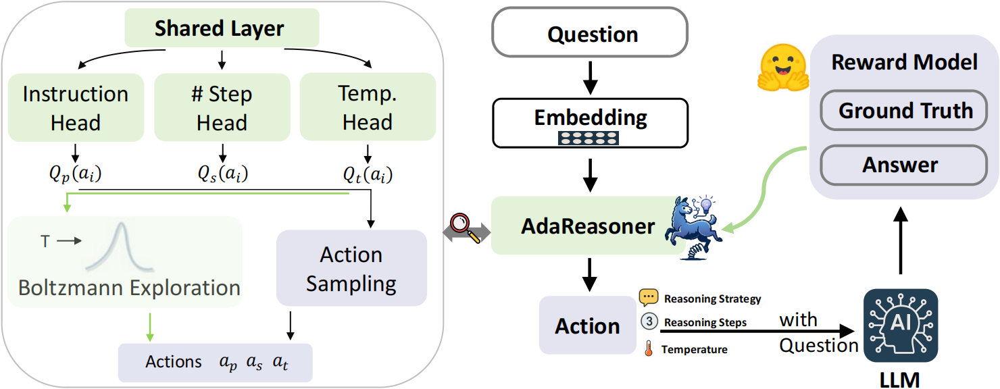

Team & Acknowledgements
Authors
* Equal Contribution
University of Notre Dame

MBZUAI
AdaReasoner is a novel, plug-and-play framework designed to automatically configure reasoning strategies for Large Language Models (LLMs). Unlike traditional prompting methods that use static configurations, AdaReasoner dynamically selects optimal parameters (like temperature and number of reasoning steps), adapting to different tasks for improved performance and robustness.
Large language models have shown remarkable reasoning abilities, but their success often hinges on getting just the right settings—like how many steps to take, whether to think step-by-step, or how much randomness to allow. The problem? These settings are usually fixed, and what works for one task might completely fail on another. AdaReasoner was created to tackle this issue head-on: instead of relying on a one-size-fits-all approach, it learns to adapt the reasoning strategy to each specific question, making the model more flexible, reliable, and effective across a wide range of tasks.
AdaReasoner introduces adaptive reasoning through a model-agnostic, reinforcement learning (RL)-based policy system. Its main innovations include:

Figure: Overview of AdaReasoner's architecture and workflow
Learns to select the best configuration for each prompt using reward signals from a pre-trained model.
Achieves strong performance with minimal supervision and data.
Can be plugged into any LLM without modification.
AdaReasoner was tested across six different LLMs and various reasoning tasks. Key findings include:
| Method | Metaphor | TruthfulQA | MMLU (Math) | LogiQA | Average |
|---|---|---|---|---|---|
| CoT | 50.40 | 78.40 | 76.04 | 70.00 | 68.71 |
| Think Short | 61.00 | 64.81 | 68.52 | 70.81 | 66.28 |
| ToT | 48.25 | 74.29 | 86.11 | 73.90 | 70.91 |
| Best-of-N | 52.60 | 79.41 | 83.41 | 72.37 | 71.95 |
| Auto-CoT | 62.33 | 83.09 | 72.15 | 71.71 | 72.32 |
| In-context CoT | 53.98 | 77.04 | 83.63 | 80.04 | 74.42 |
| AdaReasoner | 71.56 | 81.30 | 86.49 | 82.31 | 80.42 |
* Equal Contribution
University of Notre Dame
MBZUAI